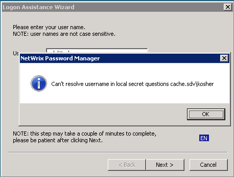

In the client (logon prompt extension) I get the following error after entering username and
clicking Next

When a user enrolls from his machine with help of Password Manager Enrollment, a local copy of secret questions-answers pairs is created on the machine. This local questions cache is used to reset password in Windows local cache when Password Manager server is not available. The error occurs when Logon Prompt Extension is not able to connect to the Password manager server and cannot find locally saved questions.
First of all make sure that client is pointed to the correct Password manager Self-Service portal URL. It is determined by the PRM_server registry value located in the following registry keys (by priority)
When a user enrolls from his machine with help of Password Manager Enrollment, a local copy of secret questions-answers pairs is created on the machine. This local questions cache is used to reset password in Windows local cache when Password Manager server is not available. The error occurs when Logon Prompt Extension is not able to connect to the Password manager server and cannot find locally saved questions.
First of all make sure that client is pointed to the correct Password manager Self-Service portal URL. It is determined by the PRM_server registry value located in the following registry keys (by priority)
- HKLMSoftware[Wow6432Node]PoliciesNetWrixPassword Manager
- HKLMSoftware[Wow6432Node]NetWrixPassword Manager Self-Service client (is used if there is no value in the 1st key)